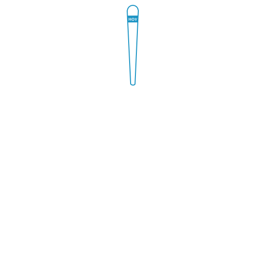

Gestograma de embarazo


Calculadora de embarazo online que permite conocer tu calendario de embarazo semana a semana, fecha estimada de parto, datos del bebé y en general todo el proceso de gestación ahora que estás embarazada.
Coloca el puntero del ratón en la flecha azul, pulsa el botón derecho y manteniéndolo pulsado muévelo hasta la fecha de tu última regla antes de quedar embarazada
y descubre el estado tu bebé, diámetro biparietal, talla, peso y la fecha aproximada de parto.